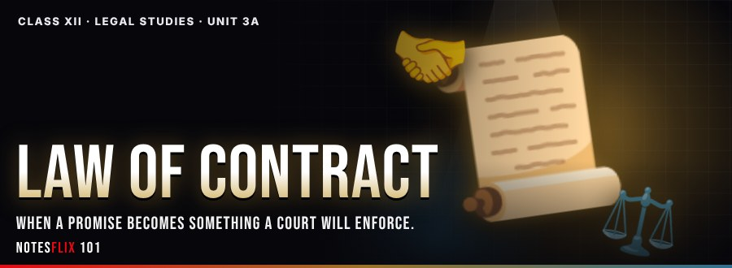
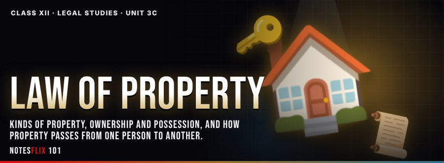
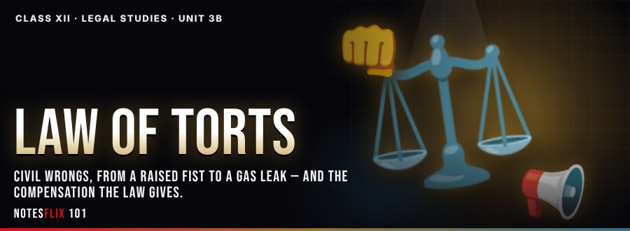

Class 12 Legal Studies Notes
Interactive CBSE Class 12 Legal Studies notes from Notesflix 101. They follow the CBSE Legal Studies syllabus (2026-27) and the CBSE textbook Legal Studies for Class 12, with current Indian law. Each chapter is broken into short parts with easy explanations, picture stories, flash cards, quizzes and board-style exam questions with model answers. 6 of 6 parts are free to read with no password. The other parts open with a password from Notesflix 101.
Chapters

Unit 3A: Law of Contract
When a promise becomes something a court will enforce.
- Agreement, Offer and Acceptance (Part 1)FREE — Agreement vs contract, the essentials of s.10, offer and acceptance, with two real case briefs, a contract gate game and board-exam practice. (25 min)
- Capacity, Free Consent and Consideration (Part 2)FREE — Story, animations, 3D board, simulations and board-exam practice on Capacity (s.11), minor’s agreement, Free consent: coercion, undue influence, fraud, misrepresentation, mistake, Consideration (s.2(d), s.25). (25 min)
- Types, Discharge and Remedies (Part 3)FREE — Story, animations, 3D board, simulations and board-exam practice on Types of contracts, Discharge of contract, frustration (s.56), Remedies for breach (s.73). (25 min)

Unit 3C: Law of Property
Kinds of property, ownership and possession, and how property passes from one person to another.
- Kinds, Ownership and TransferFREE — Story, animations, 3D board, simulations and board-exam practice on Meaning and kinds of property, Ownership and possession, Transfer of property (ss.5–6 TPA). (25 min)

Unit 3B: Law of Torts
Civil wrongs, from a raised fist to a gas leak — and the compensation the law gives.
- Civil Wrongs, Maxims and Defamation (Part 1)FREE — Story, animations, 3D board, simulations and board-exam practice on Meaning and nature of tort, Injuria sine damno, damnum sine injuria, Intentional torts. (25 min)
- Negligence, Strict and Absolute Liability (Part 2)FREE — Story, animations, 3D board, simulations and board-exam practice on Negligence, Strict liability, Absolute liability. (25 min)
Frequently asked questions
Are the Class 12 Legal Studies notes free?
6 of 6 parts are free to read with no password. The other parts open with a password from Notesflix 101.
Which syllabus do these Class 12 Legal Studies notes follow?
They follow the CBSE Legal Studies syllabus (2026-27) and the CBSE textbook Legal Studies for Class 12, with current Indian law. Every chapter is split into short interactive parts with simple explanations, flash cards, quizzes and board-style exam questions with model answers.
How many chapters are covered?
3 chapters: Law of Contract; Law of Property; Law of Torts.
How do I get the password for locked notes?
Email support@notesflix101.com with your name, class, school and the Gmail ID you sign in with. The same password opens every locked Legal Studies note.